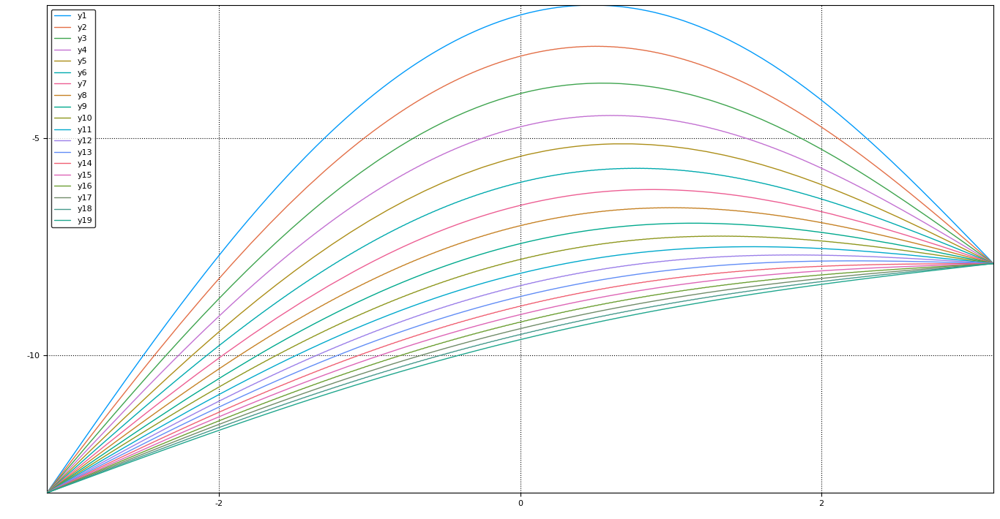
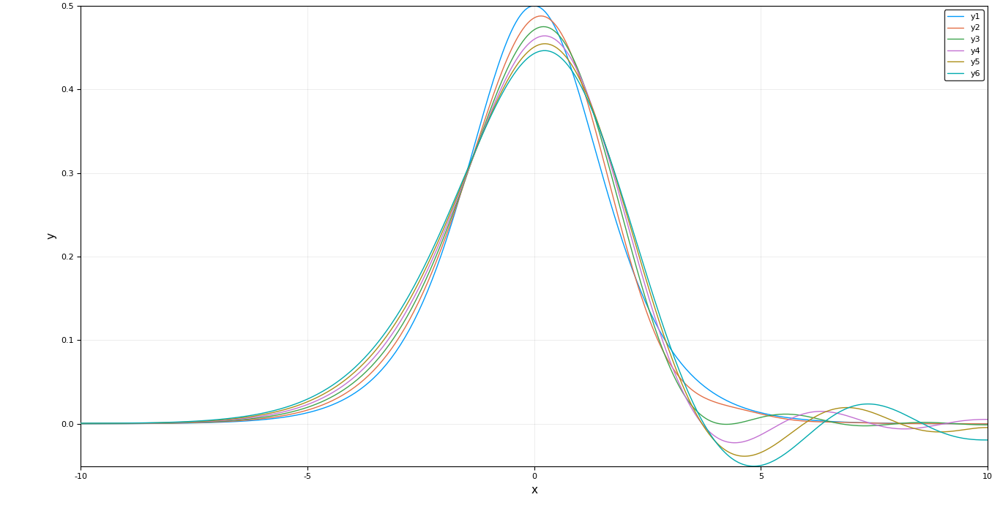

GSoC 2017: Efficient Discretizations of PDE Operators
This project is an attempt towards building a PDE solver for JuliaDiffEq using the Finite Difference Method(FDM) approach. We take up the FDM approach instead of FEM and FVM as there are many toolboxes which already exist for FEM and FVM but not for FDM. Also, there are many use cases where the geometry of the problem is simple enough to be solved by FDM methods which are much faster due to their being able to avoid the bottleneck step of matrix multiplication by using Linear transformations to mimic the effect of a matrix multiplication. Since matrix multiplication basically transforms a vector element to a weighted sum of the neighbouring elements, this can be easily acheived using a special function which acts on the vector in optimal $\mathcal{O}(n)$ time.
The result is a new package called DiffEqOperators.jl which creates efficient discretizations of partial differential operators thereby converting PDEs to ODEs which can be solved efficiently by existing ODE solvers. The DerivativeOperator is based on central differencing schemes of approximating derivatives at a point whereas the UpwindOperators are based on one-sided differencing schemes where the solution is typically a wave moving in a particular direction. The package also supports a variety of boundary conditions like Dirichlet, Neumann, Periodic and the Robin boundary condition.
MOTIVATION
The general idea of finite difference methods is to generate finite difference weights corresponding to a differential operator allowing a certain level of approximation. The time and space variable are divided to form a grid where
$h = \Delta x = \frac{1}{N+1}$ and $x_i = ih$ for $i = 0, 1,...,N+1$ and
$k = \Delta t = \frac{T}{M+1}$ and $t_j = jk$ for $j = 0, 1,...,M+1$.
The discrete unknowns are scalars $u_i^j$
for the above values of i and j, and it is hoped that $u_i^j$
will be an approximation of $u(x_i, t_j)$
. The right-hand side of the equation is discretized by setting $f_i^j = f(x_i, t_j)$
. We also use the notation
$$ U^{j} = \begin{pmatrix} u_1^j\\ u_2^j \\ \vdots \\ u_N^j \end{pmatrix} $$ to denote the vector of approximate values on the space grid at time $t_j$.
$$\frac{\partial u}{\partial t}(x_i,t_j) \approx \frac{u(x_i,t_{j+1}) - u(x_i,t_j)}{k}$$and for the second space derivative, by combining a forward and a backward differential quotient, we obtain the central approximation
$$ \frac{\partial^2u }{\partial x^2}(x_i,t_j) \approx \frac{\frac{u(x_{i+1},t_j) - u(x_i,t_j)}{h} - \frac{u(x_i,t_j) - u(x_{i-1},t_j)}{h}}{h} = \frac{u(x_{i-1},t_j) - 2u(x_i,t_j) + u(x_{i+1}, t_j)} {h^2} $$So the weights corresponding to the second order partial derivative are $[1, -2, 1]$. The finite difference method mimics these approximations by replacing the exact values of the solution at the grid points by the discrete unknowns.
In this particular case, we end up with the following scheme:
\begin{matrix} \frac{u_j^{j+1} - u_i^j}{k} - \frac{u_{i-1}^j - 2u_i^j + u_{i+1}^j}{h^2} = f_i^j \textit{ for } i = 1,...,N,j = 1,...,M \\ u_i^0 = u_0(x_i) \textit{ for } i = 1,...,N\\ u_0^j = u_{N+1}^j = 0 \textit{ for } j = 1,...,M+1\\ \end{matrix}.This is the stencil rewritten as a recurrence. Writing it out in vector form, we get:- $\frac{U^{j+1} - U^j}{k} + A_h U^j = F^j \textit{ for } j = 1,...,M$
When we want to apply this operator on the vector $U$, the weight vector turns into a matrix called the transformation matrix $A_h$
$$ A_h = \begin{pmatrix} 2 & -1 & 0 & \cdots & 0\\ -1 & 2 & -1 & \cdots & 0\\ \vdots & \ddots & \ddots & \ddots & \vdots \\ 0 & \cdots & -1 & 2 & -1 \\ 0 & \cdots & 0 & -1 & 2 \\ \end{pmatrix} \textit{such that } \frac{\partial^2U^j}{\partial x^2} \approx A_h*U^j $$But matrix multiplication is costly, therefore it would be preferable to have the linear operator of the double partial differential instead of the transformation matrix. It would look something like:-
function double_partial(x,dx)
for i in 2:length(dx)-1
dx[i] = -1*x[i-1] + 2*x[i] + -1*x[i+1]
end
dx[1] = 2*x[1] + -1*x[2]
dx[end] = -1*x[end-1] + 2*x[end]
endThis function acts on the vector in an optimal $\mathcal{O}(n)$ time as compared to the inefficient $\mathcal{O}(n^2)$ time taken by matrix multiplication while still avoiding the overheads of sparse matrices.
So to convert the PDE into an ODE, we discritize the equation in space but not in time. Then this ODE can be solved efficiently by the existing solvers. Our semi-linear heat equation also known as the reaction-diffusion equation transforms to the following ODE. $u_i' = A_{h}u_i + f(t,u_i)$ Where $A$ is a linear operator and not the transformation matrix. Thus we will have to make the ODE solvers of DifferentialEquations.jl compatible with linear operators also.
Since it is tedious to compute the Taylor coefficients by hand, Fornberg gave an algorithm to compute them efficiently for any derivative and approximation order. These stencils can efficiently compute derivatives at any point by taking appropriately weighted sums of neighboring points. For example, $[-1, 2, -1]$ is the second order stencil for calculating the 2nd derivative at a point.
In DiffEqOperators.jl we can easily extract stencils of any derivative and approximation order from an operator. For eg.
# Define A as a DerivativeOperator of 4th order and of 2nd order of accuracy
julia> A = DerivativeOperator{Float64}(4,2,1.0,10,:Dirichlet0,:Dirichlet0)
julia> A.stencil_coefs
7-element SVector{7,Float64}:
-0.166667
2.0
-6.5
9.33333
-6.5
2.0
-0.166667If we want to apply the operator as a matrix multiplication (sparse or dense) we can easily do so by extracting the matrix of transformation of the linear operator which looks like:-
julia> full(A)
10×10 Array{Float64,2}:
9.33333 -6.5 2.0 … 0.0 0.0 0.0
-6.5 9.33333 -6.5 0.0 0.0 0.0
2.0 -6.5 9.33333 0.0 0.0 0.0
-0.166667 2.0 -6.5 0.0 0.0 0.0
0.0 -0.166667 2.0 -0.166667 0.0 0.0
0.0 0.0 -0.166667 … 2.0 -0.166667 0.0
0.0 0.0 0.0 -6.5 2.0 -0.166667
0.0 0.0 0.0 9.33333 -6.5 2.0
0.0 0.0 0.0 -6.5 9.33333 -6.5
0.0 0.0 0.0 2.0 -6.5 9.33333
julia> sparse(A)
10×10 SparseMatrixCSC{Float64,Int64} with 58 stored entries:
[1 , 1] = 9.33333
[2 , 1] = -6.5
[3 , 1] = 2.0
[4 , 1] = -0.166667
[1 , 2] = -6.5
[2 , 2] = 9.33333
[3 , 2] = -6.5
⋮
[7 , 9] = 2.0
[8 , 9] = -6.5
[9 , 9] = 9.33333
[10, 9] = -6.5
[7 , 10] = -0.166667
[8 , 10] = 2.0
[9 , 10] = -6.5
[10, 10] = 9.33333Stencil multiplications are embarrassingly parallel and this have been taken cared of DiffEqOperators.jl.
Solving the Heat equation using DiffEqOperators
Now let us solve the solve the famous heat equation using the explicit discretization on a 2D space x time grid. The heat equation is:-
For this example we consider a Dirichlet boundary condition with the initial distribution being parabolic. Since we have fixed the value at boundaries (in this case equal), after a long time we expect the 1D rod to be heated in a linear manner.
julia> using DiffEqOperators, DifferentialEquations, Plots
julia> x = -pi : 2pi/511 : pi;
julia> u0 = -(x - 0.5).^2 + 1/12;
julia> A = DerivativeOperator{Float64}(2,2,2pi/511,512,:Dirichlet,:Dirichlet;BC=(u0[1],u0[end]));This is the code to set-up the problem. First we define the domain which is just a plane line divided up into 512 segments. Then we define the initial condition, which is a parabolic function of the x-coordinate.
Finally we initialize the DerivativeOperator of 2nd derivative order and 2nd approximation order. We tell the grid step value, total length of the domain and the boundary conditions at both the ends. Notice that since we are applying the Dirichlet boundary condition here, we need to tell the value at boundaries which is given in the form of a tuple as the last parameter.
Now solving equation as an ODE we have:-
julia> prob1 = ODEProblem(A, u0, (0.,10.));
julia> sol1 = solve(prob1, dense=false, tstops=0:0.01:10);
# try to plot the solution at different time points using
julia> plot(x, [sol1(i) for i in 0:1:10])
Notice how the heat distribution ‘flattens’ out with time as expected and finally tends to increase linearly from left to right end.
Where do central derivatives fail?
Not all PDEs can be solved with central derivatives, for example the KdV wave equation. After a few iterations of the ODE solver the wave begins to split ie. it becomes unstable very quickly.

For these very cases the upwind scheme has been devised. It denote a class of numerical discretization methods for solving hyperbolic PDEs. They attempt to discretize hyperbolic PDEs by using differencing biased in the direction determined by the sign of the characteristic speeds. For example the 1D linear advection equation $$ \frac{\partial u}{\partial t} + a\frac{\partial u}{\partial x}=0 $$ describes a wave propagating along the x-axis with a velocity $a$. If $a$ is positive, the traveling wave solution of the equation above propagates towards the right, the left side is then called the upwind side and the right side is called the the downwind side. If the finite difference scheme for the spatial derivative, $\frac{\partial u}{\partial x}$ contains more points in the upwind side, the scheme is called upwind scheme. Considering a case of 2nd upwind scheme, define
$$ a^{+} = max(a,0)$$ $$a^{-} = min(a,0)$$ $$u_x^- = \frac{3u_i^n-4u_{i-1}^n+u_{i-2}^n}{2\Delta x}$$ $$u_x^+ = \frac{-u_{i+2}^n+4u_{i+1}^n-3u_{i}^n}{2\Delta x} $$The general solution can then be written as follows:- $u_i^{n+1} = u_i^n - \Delta t[a^{+}u_x^{-} + a^{-}u_x^{+}]$
The solution of the KdV equation using upwind operator looks better.

Future Work
Although vanilla DerivativeOperators and the UpwindOperators form the major part of DiffEqOperators there is still a lot to be done. A major functionality which is half implemented is application of DiffEqOperators on high dimensional spaces. Currently we support mixed and normal derivatives on 2D spaces only. There are open issues and implementation ideas on the issues page.
We are also working on the Robin boundary conditions for DerivativeOperators which are currently not as accurate as they should be.
Another avenue for work is the lazy implementations of expm and expmv for DerivativeOperators.
Acknowledgments
I would like to thank my mentors Christopher Rackauckas and @dextorious for their immense support before and throughout the project.